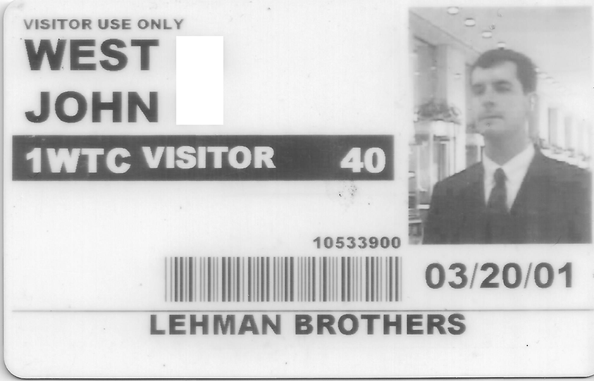

2001
I actually don't remember the name of the company that I worked for over the next three months - another Interwoven partner. I actually taught Interwoven to some March First employees at one class in San Diego, but by March First of 2001, I think March First was out of business as well. That employer fell apart and I ended up at Enterpulse out of Decatur, Georgia for a few months. For them I taught some Interwoven classes and worked for some Interwoven customers in Europe.
I taught one class in something called the Queen's Castle near Denmark, something named something like Ascott in England, an industrial town near France, Milano in Italy, Barcelona in Spain, and I spent a few months at Telenor and De Norske Bank in or near Oslo. My employer would pay for Susan to travel with me, which included her flights, her meals, and our shared hotel rooms. I have a few stories from these days that don't relate to my career, but it was obvious pretty quickly that Susan and I were not going to last. Actually, it was obvious as soon as we got married, or maybe before we got married, in late November of 2000.
On one trip, we started out in Milan, where I had some work with Whirlpool. Before we went, Susan, who supposedly had studied the Italian language, made fun of me for referring to it as Milano. The coffee and food in Italy were great. I had to work, but Susan got to explore.
During the week that we were in Italy, my company informed me that we had to be in Barcelona the next week. Something went wrong with flights that week. I think almost spent a night at the airport and then decided to try the train, but of course that was overflowing. We tried to take a taxi from there, but the queue was ridiculous. We ended up in an illegal taxi, which was a funny experience. I don't think we drove all the way to Barcelona, so we probalby took a flight from a different airport.
My client was Portal de la Salud, some kind of government health portal. This is somewhat ironic because people still smoked cigarettes in the office, which I found disgusting.
There were no hotels available in Barcelona, so we ended up in a resort in Sitges, which is near the coast. It was there that Susan informed me that she had been with two additional guys that she had not told me about, including one named Jon. I don't know why she chose this moment, but I was extremely upset.
In the USA, for a while, I paid for Susan to go through a program for some kind of web professional certification, I think at San Diego State University.
Pretty soon, it was obvious that the .com crazy money period was coming to an end. I asked Susan to sell all my Xilinx stock while I was at work, but she didn't follow my instructions, and it lost a lot of value before I could sell it.
In the sprint of 2001, I applied for two jobs doing Interwoven work on the east coast. One was at Fannie Mae in Washington D.C. I could tell immediately that I could survive in D.C., but I wouldn't want to live there. Every experience I've had in D.C. since has confirmed this.
The company flew me out for the interview, which generally indicates that there is little relevent talent available in the area. It was pretty clear that the job was mine if I wanted it. One person with whom I spoke told me that the company made about $1,500,000 in profit - not revelue, but profit - per employee, per year. While this might appeal to many people, it made it clear to me that something was structurally incorrect about the business, which may have been one reason I didn't take the job.
The other East Coast job for which I applied was at Lehman Brothers, where my brother Adrian had worked after college in the late 90s. I remembered how he could barely afford to share a crappy one-bedroom apartment in Manhattan while working his ass off, but I was still interested in the opportunity.
Not only did Lehman fly me from San Diego to New York City, but they sent me first class and paid for a nice hotel near the World Trade Center (WTC), where they had their offices. Someone had told me that I would get dizzy if I stood at the corner of one of the huge WTC buildings and looked up. These buildings were indescribabily impressive - literally like individual cities within the city - but I did not achieve this sensation.
I think the Lehman offices were around the 40th floor. It was another situation where I was relatively certain that I had the job, but I might have asked for too much money. I remember specifically asking about window offices, which would have been completely out of the question. I still have the identification badge that I used. It's funny to see myself in a suit, which is something that I almost never wear anywhere.

copy from article
9/11
trip to China
I took a job at U.S. Bank near Portland, Oregon, which was starting an Interwoven project. The Lehman offices were below the floor that the airplane hit, but were obviously destroyed when the World Trace Center buildings came down on September eleventh of that year. Several years later, Lehman Brothers was wiped out in a national financial crisis that also caused significant challenges for Fannie Mae.
It was kindof a bummer to leave San Diego, especially since we let someone pick an apartment in Fairfield rather than living in Portland, which I feel was a much nicer place to live than it is now. One of the things that startled me during my interview there was seeing so many RVs and vehicles with canooes strapped to them on weekdays, like people weren't really just driving back and forth to work every day like they seemed to be in San Diego and definitely were in Silicon Valley.
I think they offer was $84.000 per year and the bank had good benefits, but I didn't get any stock. I was happy with the architecture and implementation of the Interwoven project, but Windows would occasionally bluescreen (Windows hard crash). As it turns out, Interwoven was run by some pretty overly-confident people from Stanford that suggested that the root cause was anything other than Interwoven. The bank had to open support cases with Intel, 3Com, and Microsoft, who eventually suggested that the way to stop the specific bluescreen stop code we were receiving would be to uninstall Interwoven.
I don't remember whether Interwoven fixed the bug that was causing the crash or if the system ever went into produciton as originally architected, but it did go into production, which was basically a bunch of custom Perl code embedded in Interwoven's proprietary templating language and using their proprietary libraries and command line tools. Anyway, it worked. Microsoft also came to our headquarters to try to pitch an early version of SharePoint as a web CMS, but it was pretty obviously not ready and a bad fit.
I typicaly get to the office really early. One of the advantages of this is that nobody else knows exactly how early, so there's generally never any resistance to leaving early.
The guy named Jonathan in the next cubicle was always in the office before I arrived. On the eleventh of September, as soon as I arrived, he immediately told me that planes had struck the World Trace Center. My immediate response was to ask "Baghdad?", as I assumed that Iraq wanted some vengence for the US invasion of Iraq that had occurred in the previous decade.
Of course I was upset by the news, but unlike much of the other staff that spent the day in conference rooms watching TV news on media carts, I went back to work.
1991 - iraq, draft concerns Bank - novell, lotus, gerry
By March of 2001, it was quite clear that the dotcom bubble was bursting. I remember teaching an Interwoven Boot Camp for someone from https://en.wikipedia.org/wiki/MarchFirst on the first of March in 2001. By the middle of April, March First was bankrupt. My employer at the time had also gone bankrupt, but I had committed to teaching the class, so I completed it. I do not remember whether I got paid for that work. I remember that I never received my 15,000 worthless shares of stock from that company and that they had failed to fund retirement accounts. People showed up to the office one day and the doors were chained shut. I was working in a separate facility for training, so I was at least able to keep my laptop.
I had just been married and I needed some stability. I considered going to Singapore then to work for Interwoven, but they lowballed me (if you understand working hours and housing costs for expatriates in Singapore, you do not take a lowball). I took some interviews with financial companies: U.S. Bank in Oregon, Fannie Mae in Washington DC, and Lehman Brothers in New York. These are probably the only times that I wore a suit for work. I remember someone at Fannie Mae telling me that each employee corresponded to approximately $1.5M in profit (not revenue) per year. I guess I should have known that something was wrong there too. At the time, anything approaching six figures seemed like an outrageous salary.
Interwoven skills were in demand, and I was one of the rare few who even knew what this technology was. Lehman flew me to New York first class and put me up in a hotel near their office in WTC1 (World Trade Center Building 1).
The twin towers were like cities within the city; they had their own postal code(s). If I remember correctly, there was a train station at the bottom of the building. The temporary IDs were of higher quality than some permanent IDs I've had. If you stood with your back to an exterior corner and looked up, you would experience something like vertigo.
My interview on the fortieth floor went fine, mostly because the interviewers did not know what to ask, but I was young and cocky. Though I love the place, I certainly did not want to live or even work in New York City every day, especially if I could not have an office with a window. As it turned out a few months later, I was probably quite lucky that things did not work out there. And a few years after that, when Lehman collapsed in debt, I was even more glad that I had not taken that job.
No alt text provided for this image https://www.youtube.com/watch?v=sPLvdKuea5M
Back then, airlines could fly in over the city. It must have been on that trip that the pilot tipped the plane to one side so that the passengers could look down into the canyons between the buildings in Manhattan. At night, it was an amazing view. Times Square was about the brightest thing I had ever seen. Incidentally, I have flown into silicon valley enough times to know that the freeways and suburbs at night literally look like an animated circuit board.
Less than six months after that interview, I remember getting to the office at U.S. Bank on the day of the major American tragedy that year, early as usual. In the huge cubicle farm, there was one person that would arrive before me, and he immediately broke the news, which still hurts to this day. I must admit that my first response was, “Baghdad?”, which was a semi-logical assumption but turned out to be far from the true cause.
I remember that employees wheeled TV carts into meeting rooms and watched the news all that day. I stopped by for updates, but spent the day working, as I was new to the company and responsible for systems. Maybe I wasn't ready to really process the news anyway.
From the fortieth floor of WTC1, I probably would have been able to escape uninjured. I like to think that I would have tried to go up to help others, but to be honest, I am not sure what I could have done. I have never been in that kind of disaster or panic situation, and people often do not turn out to be who they think they are, whether less or more.
I never support any war and flew to DC to protest the second inauguration of Bush II in 2005, well supported by my then-boss at Sitecore.
No alt text provided for this image I hope that the rest of the world understands that the government of the United States represents only some small fraction of its people.
https://www.npr.org/2020/08/03/897202359/2020-electoral-map-ratings-trump-slides-biden-advantage-expands-over-270-votes
No alt text provided for this image Note that the coasts are the main population centers.
DC 2005: Fear of "terrorists" (now children making fun of politicians on TikTok). Read the wikipedia page; we used the bag checks against them.
No alt text provided for this image By the time Trump got elected, I had moved to Singapore, and was quite happy about that.
Anyway, for me individually, things worked out OK, although that date certainly cut a scar in my heart.
By March of 2001, it was quite clear that the dotcom bubble was bursting. I remember teaching an Interwoven Boot Camp for someone from https://en.wikipedia.org/wiki/MarchFirst on the first of March in 2001. By the middle of April, March First was bankrupt. My employer at the time had also gone bankrupt, but I had committed to teaching the class, so I completed it. I do not remember whether I got paid for that work. I remember that I never received my 15,000 worthless shares of stock from that company and that they had failed to fund retirement accounts. People showed up to the office one day and the doors were chained shut. I was working in a separate facility for training, so I was at least able to keep my laptop.
I had just been married and I needed some stability. I considered going to Singapore then to work for Interwoven, but they lowballed me (if you understand working hours and housing costs for expatriates in Singapore, you do not take a lowball). I took some interviews with financial companies: U.S. Bank in Oregon, Fannie Mae in Washington DC, and Lehman Brothers in New York. These are probably the only times that I wore a suit for work. I remember someone at Fannie Mae telling me that each employee corresponded to approximately $1.5M in profit (not revenue) per year. I guess I should have known that something was wrong there too. At the time, anything approaching six figures seemed like an outrageous salary.
Interwoven skills were in demand, and I was one of the rare few who even knew what this technology was. Lehman flew me to New York first class and put me up in a hotel near their office in WTC1 (World Trade Center Building 1).
The twin towers were like cities within the city; they had their own postal code(s). If I remember correctly, there was a train station at the bottom of the building. The temporary IDs were of higher quality than some permanent IDs I've had. If you stood with your back to an exterior corner and looked up, you would experience something like vertigo.
My interview on the fortieth floor went fine, mostly because the interviewers did not know what to ask, but I was young and cocky. Though I love the place, I certainly did not want to live or even work in New York City every day, especially if I could not have an office with a window. As it turned out a few months later, I was probably quite lucky that things did not work out there. And a few years after that, when Lehman collapsed in debt, I was even more glad that I had not taken that job.
No alt text provided for this image https://www.youtube.com/watch?v=sPLvdKuea5M
Back then, airlines could fly in over the city. It must have been on that trip that the pilot tipped the plane to one side so that the passengers could look down into the canyons between the buildings in Manhattan. At night, it was an amazing view. Times Square was about the brightest thing I had ever seen. Incidentally, I have flown into silicon valley enough times to know that the freeways and suburbs at night literally look like an animated circuit board.
Less than six months after that interview, I remember getting to the office at U.S. Bank on the day of the major American tragedy that year, early as usual. In the huge cubicle farm, there was one person that would arrive before me, and he immediately broke the news, which still hurts to this day. I must admit that my first response was, “Baghdad?”, which was a semi-logical assumption but turned out to be far from the true cause.
I remember that employees wheeled TV carts into meeting rooms and watched the news all that day. I stopped by for updates, but spent the day working, as I was new to the company and responsible for systems. Maybe I wasn't ready to really process the news anyway.
From the fortieth floor of WTC1, I probably would have been able to escape uninjured. I like to think that I would have tried to go up to help others, but to be honest, I am not sure what I could have done. I have never been in that kind of disaster or panic situation, and people often do not turn out to be who they think they are, whether less or more.
I never support any war and flew to DC to protest the second inauguration of Bush II in 2005, well supported by my then-boss at Sitecore.
No alt text provided for this image I hope that the rest of the world understands that the government of the United States represents only some small fraction of its people.
https://www.npr.org/2020/08/03/897202359/2020-electoral-map-ratings-trump-slides-biden-advantage-expands-over-270-votes
No alt text provided for this image Note that the coasts are the main population centers.
DC 2005: Fear of "terrorists" (now children making fun of politicians on TikTok). Read the wikipedia page; we used the bag checks against them.
No alt text provided for this image By the time Trump got elected, I had moved to Singapore, and was quite happy about that.
Anyway, for me individually, things worked out OK, although that date certainly cut a scar in my heart.
In 2020, I wrote an article on LinkedIn about some relevant experiences. I don't intend to reproduce all of this here:
Susan, who had changed her last name to West when we married, got her citizenship through our marriage shortly after we moved to Portland.
Susan and I got a cat, but it was immediately clear that she was not a pet person. This is somewhat opposite to me, who generlaly has good relationships with all animals and loves to care for plants as well. I should have interpreted this as a sign.
bought M3